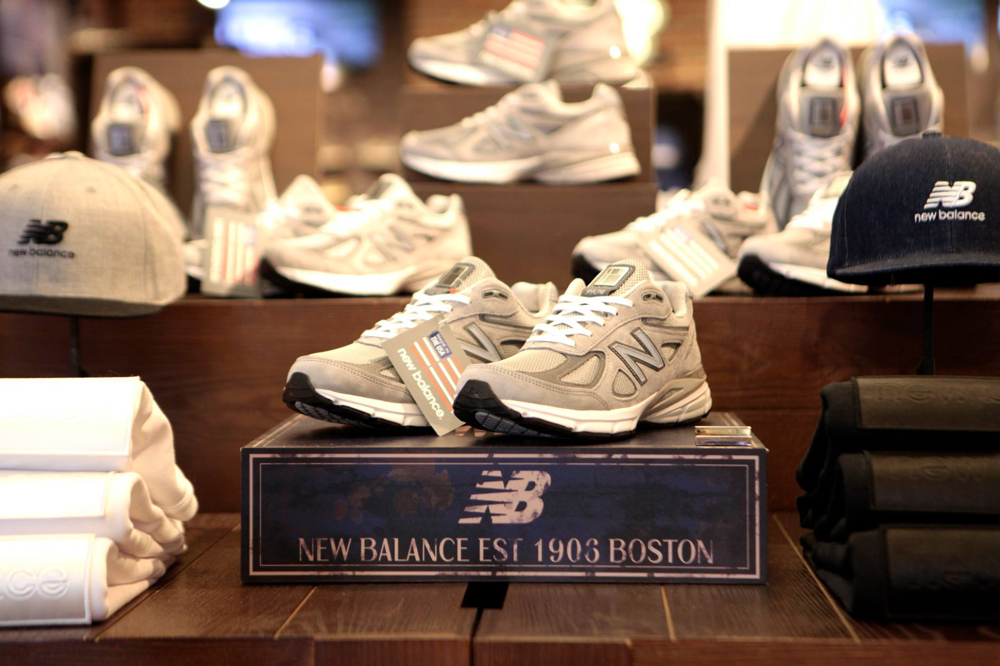
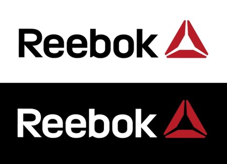
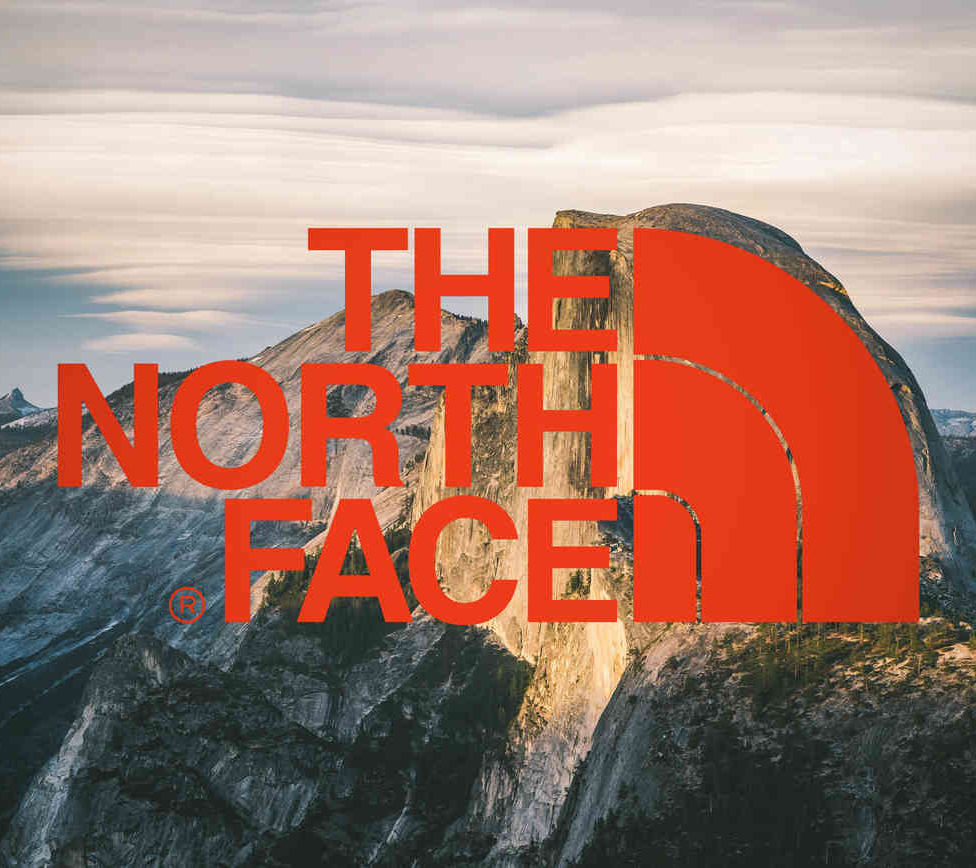
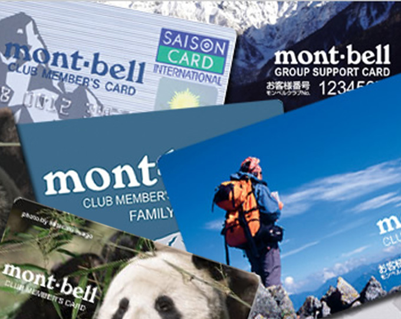
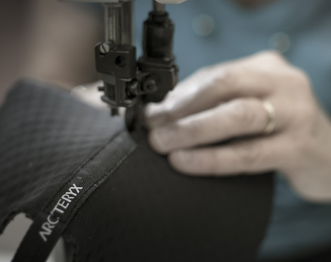

홈 > 브랜드 매거진 > 코오롱스포츠
코오롱스포츠
코오롱스포츠는 대한민국의 아웃도어 브랜드입니다. 등산복, 재킷, 신발, 캠핑 관련 제품을 중심으로 국내 아웃도어 시장에서 인지도를 쌓았습니다.
산업 분야 스포츠·아웃도어 · 공개 등급 자료 기반 · 브랜드 평가 4.2 ★
한눈에 보는 브랜드
코오롱스포츠는 대한민국 기반의 스포츠·아웃도어 브랜드입니다. 기능성, 경기 문화, 커뮤니티, 착용 이미지가 브랜드 가치를 만드는 영역으로 분류되며, 브랜드명과 업종, 운영 국가, 공개 로고 여부를 함께 보며 사전 항목의 기본 맥락을 확인할 수 있습니다.
브랜드 관점
코오롱스포츠 항목은 단순한 이름 목록이 아니라 스포츠·아웃도어 시장 안에서 어떤 역할을 하는지 읽기 위한 기준점입니다. 제품·서비스 범위, 유통 방식, 시각 아이덴티티, 시장 포지션을 함께 비교하면 같은 산업의 다른 브랜드와 차이가 선명해집니다.
브랜드 아이덴티티
코오롱스포츠의 정체성은 산악 활동, 기능성 의류, 아웃도어 라이프스타일, 장기적인 브랜드 헤리티지에서 형성됩니다.
제품과 서비스
주요 제품·서비스: 아웃도어 의류, 등산화, 재킷, 캠핑 용품, 라이프스타일웨어
현재 상태
타임라인
정리된 연도형 이벤트가 없습니다.
BI/CI 변천사
확인된 BI/CI 이미지가 아직 없습니다.
함께 읽을 브랜드
블랙야크는 대한민국의 아웃도어 브랜드입니다. 등산복, 기능성 의류, 신발, 산악 활동 제품을 중심으로 국내외 아웃도어 시장에서 브랜드를 구축했습니다.

스포츠·아웃도어 · 편집 검수뉴발란스뉴발란스는 스포츠·아웃도어 브랜드로, 기능성, 경기 문화, 커뮤니티, 착용 이미지가 브랜드 가치를 만드는 영역입니다.

스포츠·아웃도어 · 편집 검수리복리복는 미국의 스포츠·아웃도어 브랜드로, 기능성, 경기 문화, 커뮤니티, 착용 이미지가 브랜드 가치를 만드는 영역입니다.
 스포츠·아웃도어 · 편집 검수말보로
스포츠·아웃도어 · 편집 검수말보로말보로는 영국의 스포츠·아웃도어 브랜드로, 기능성, 경기 문화, 커뮤니티, 착용 이미지가 브랜드 가치를 만드는 영역입니다.
 스포츠·아웃도어 · 편집 검수푸마
스포츠·아웃도어 · 편집 검수푸마푸마는 스포츠·아웃도어 브랜드로, 기능성, 경기 문화, 커뮤니티, 착용 이미지가 브랜드 가치를 만드는 영역입니다.

스포츠·아웃도어 · 자료 기반노스페이스노스페이스는 미국의 스포츠·아웃도어 브랜드로, 기능성, 경기 문화, 커뮤니티, 착용 이미지가 브랜드 가치를 만드는 영역입니다.

스포츠·아웃도어 · 자료 기반몽벨몽벨는 프랑스의 스포츠·아웃도어 브랜드로, 기능성, 경기 문화, 커뮤니티, 착용 이미지가 브랜드 가치를 만드는 영역입니다.

스포츠·아웃도어 · 자료 기반아크테릭스아크테릭스는 스포츠·아웃도어 브랜드로, 기능성, 경기 문화, 커뮤니티, 착용 이미지가 브랜드 가치를 만드는 영역입니다.